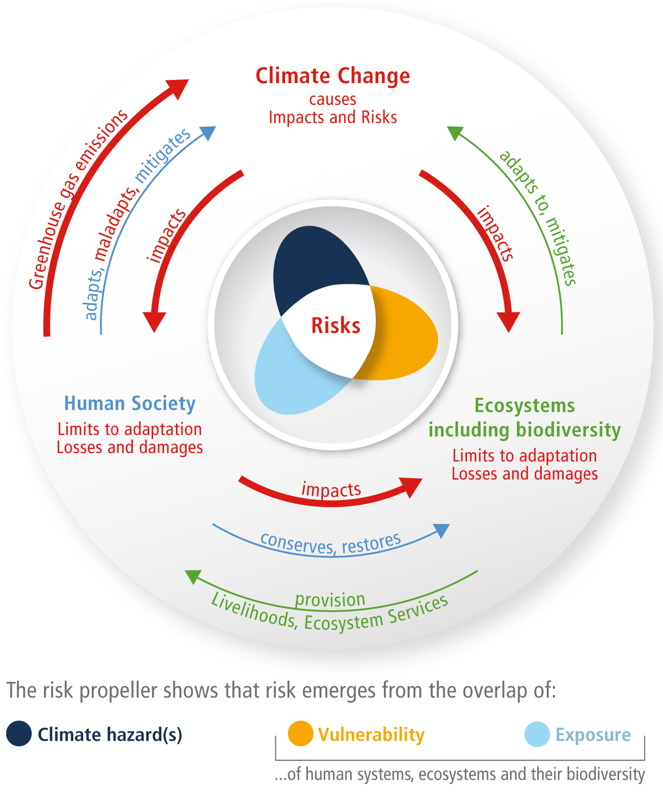

Welcome to Decision Analysis for Wicked Climate Problems!
Lecture 01
September 15, 2025
Why analyze decisions?
How did you make these decisions?
Where to go to college?
Whether/where to go to graduate school?
What car to buy?
What house/apartment to buy/rent?
Wicked planning problems
The search for scientific bases for confronting problems of social policy is bound to fail, becuase of the nature of these problems. They are “wicked” problems…
[there are no] “optimal solutions” to social problems unless severe qualifications are imposed first…
— Rittel, H.W.J., Webber, M.M. Dilemmas in a general theory of planning. Policy Sci 4, 155–169 (1973).
The stakes are high for wicked problems
“Every solution to a wicked problem is a ‘one-shot operation’; because there is no opportunity to learn by trial-and-error, every attempt counts significantly” — ibid

Inaction is a decision
What examples can you think of where inaction has negative consequences?

- Burst pipe
- Small fire in house
- Downed electrity line
- Novel viruses
- Climate change
Why analyze actions to manage climate risks?
Humans are changing the climate
Figure 2: : Figure SPM.2 in IPCC, 2021: Summary for Policymakers.
This intersects with many dimensions of global change
Figure 3: : Figure SPM.1 in IPCC, 2022: Summary for Policymakers.
The impacts of global change are unequal

Actors throughout society are already planning and making decisions to manage their risks
- International agreements to reduce emissions
- National investments in decarbonization
- Large-scale public infrastructure projects
- Household decisions to relocate or harden
- And don’t forget: inaction is a decision
Are actors making good decisions? Can they do better?
In this course, you will learn how to:
- Frame climate decision problems in a helpful way.
- Apply multi-objective robust decision-making frameworks to real-world problems using open source software tools.
- Evaluate trade-offs between competing objectives using appropriate quantitative techniques.
- Identify actionable insights for addressing problems characterized by deep uncertainties.
- Communicate complex technical analyses clearly and effectively.
- Develop professional-quality deliverables.
Note
We are studying an approach to how decisions could be made. We are not studying how decisions are made. Closing the gap between these two areas of focus might help make decision analysis more useful. That’s the topic of an upcoming Thayer course!
A few recent examples from our group
Pollack et al. (2025): What funding rules promote equity in climate adaptation outcomes?
Zarekarizi et al. (2020): How high to elevate a home?
Getting to know each other
Meet your instructor
- I research:
- Flood-risk management
- Problems characterized by deep uncertainty
- Problems where people don’t agree on success
- Developing tools to make decision analysis more useful
- From Port Washington, NY (via Boston, MA and Centerport, NY)
- I used to own a popcorn business
Meet each other
- What is your name?
- What is your year of study?
- What decision problem interests you the most?
- What are you looking to get out of this course?
- What is one fun fact about you?
Course overview and logistics
Our course is fully online!
Note
Your first (ungraded) assignment is to take a short syllabus quiz on Canvas and confirm that you understand, and agree to abide, by course policies. You will have the opportunity to submit questions about the course and we will discuss these together next Monday.
Expectations from students
- come prepared to class (e.g., by carefully reading and synthesizing the reading assignments before class and being ready to present their synthesis in class);
- actively contribute to the group discussions and activities;
- submit the assignments on time; and
- attend office hours as needed.
Students should expect to spend roughly three times the in-course hours outside the classroom for readings and assignments.
Assignments and grading
- Active Participation (10%)
- Computational Labs (30%)
- Course Project
- Progress Reports (20%)
- Presentation (20%)
- Report (20%)
There are seven modules in this course
- “Overview”: Overview of decision analysis for wicked climate problems
- “Uncertainty”: Uncertainty and Monte Carlo analysis
- “RDM”: Robust decision-making
- “Trade-offs”: Multiple objectives and navigating trade-offs
- “DMDU”: Decision making under deep uncertainty
- “Gaps”: Gaps between decision analysis and decision support
- “Projects”: Student project presentations
Class structure
10 Spot (MWF 10:10-11:15am, Tu X-hr 12:15-1:05pm)
Mondays
- Lecture
- Take notes and ask questions
- Slides posted by Sunday night (often earlier)
Wednesdays
- Serious (but fun!) game or student-led journal club
- Be prepared to synthesize lessons into your lab report and project update
- Sometimes we will start longer labs on Wednesday
Fridays
- Lab
- Make substantial progress together
- Lab report due before next lab
Sometimes Tuesday
- A few optional meetings for setting up code stuff
- Otherwise available for meetings by appointment
Communication
- Questions during class is best
- Canvas is great - not as good as in class, but still promotes open discussion
- Office hours are great (including when the issue is urgent and/or private)
- Email is ok if issue is urgent and/or private and you can’t make office hours
Overall guidelines
- Collaboration is highly encouraged and a skill we will practice in course, but all work must reflect your own understanding.
- See GenAI policy on syllabus
- Always cite external references
- A rubric will be available for all graded assignments and you can easily find it from the schedule webpage.
- Assume good faith of others and engage in good faith yourself.
Warning
Decision analysis is values-laden and good decision analysis is explicit about normative assumptions. Please do not outsource the opportunity to learn this vital skill.
Upcoming Schedule
This week
Class
- Tuesday: computing setup
- Wednesday: lecture on framing a decision analysis
- Friday: getting comfortable with our computing setup (no lab report)
Assignments
- One required reading before Monday
- Project progress report 1
- What decision problem will you focus on this term?
- See here for more guidance
- Due next Friday before lab
Next week
- Starting Uncertainty module
- More practice with our computing setup
- First serious game of the term
- First lab and lab report of the term